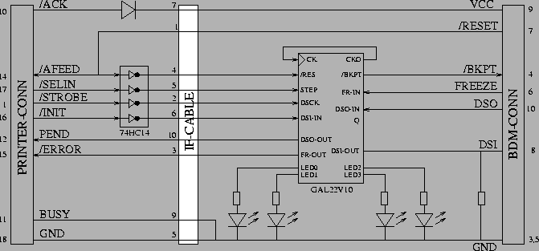

Basically, it is a serial line that is driven from an external clock. To save pin count on the chip, all but one signals have different meanings in normal CPU mode. To avoid accidental entering of the BDM mode, the BDM interface has to be enabled during reset. Afterwards, the CPU enters BDM mode in the following 3 cases:
The BDM interface is controlled via the parallel port of a PC. Its control
signals allow a fast and simple method to control the interface.
|  |
The interface, as it is shown in the figure above, implements the public domain BDM interface. It supports 3 basic functions:
MODULE bdm /* Pinout */ ------- CK | 1 24| VCC RES | 2 23| CKO /DSCK | 3 22| FR-OUT /DSI-IN | 4 21| DSO-OUT /STEP | 5 20| LED0 | 6 19| LED1 | 7 18| LED2 LEDEN | 8 17| LED3 | 9 16| FR-IN |10 15| /BKPT DSO-IN |11 14| DSI-OUT GND |12 13| ------- /* Equations */ BKPT = RES + /DSCK + Q; Q := 1; Q.AR = /STEP; CKO = /DSI-OUT + FR-IN; DSI-OUT = DSI-IN; DSI-OUT.OE = FR-IN; DSO-OUT = /(DSO-IN * FR-IN); FR-OUT = FR-IN; LED0 = FR-IN; LED1 = BKPT; LED2 = RES; LED3 = STEP; LED0.OE = LEDEN; LED1.OE = LEDEN; LED2.OE = LEDEN; LED3.OE = LEDEN;
The first function is simply implemented by connecting /RES
to the equation for /BKPT.
To stop the normal execution of the CPU and enter BDM mode the DSCK line is held low until the CPU stops which is indicated by FR-IN going high. In this case. /IFETCH output becomes now the serial data input DSI, thus the output driver of DSI-OUT is enabled. The communication is fully bidirectional. Data lines are changed with a low to high transition of DSCK and have to be latched with the high to low transition. At the same time a new command is sent via the DSI line, the possible values of a previous command are sent via DSO. The CPU returns from BDM mode after transmission of a GO command.
For the single stepping function it is important to notice that the GO command ends with a 0, i.e. the last bit sent causes DSI line to be low. After resuming normal mode (indicated by FR-IN going low) the /IFETCH function is turned on again. Hence, for a short while this line is floating before it is driven high (inactive) again. With a high to low transition of /IFETCH the CPU indicates a fetch bus cycle. In order to stop the CPU after this command again, this is the minimum period to wait for a new activation of /BKPT. To avoid unintentional activation of /BKPT during the floating period of /IFETCH the line is held low by a pull down resistor. To catch the negative edge of /IFETCH we use the negated signal as clock for register Q. If clocking is enabled through releasing of reset, i.e. STEP going high, a 1 is clocked into Q causing activation of /BKPT again. In order to have no interference with other functions as well as the normal execution mode of the CPU the STEP signal has to be low in every other case.
The physical implementation of the interface is very simple by the use of a GAL. Nevertheless, there is a problem which is caused by a usually too weak output driver of the parallel port. To have a convenient BDM interface the cable to the CPU can reach up to a length of 2m. The fast response in case of the single stepping functionality makes it desirable to have the GAL close to the CPU. Thus, a weak port output driver has a tremendous rise time in its signals which causes oscillating output signals of the GAL and hence destroys the whole transmission. To overcome this, a Schmitt trigger inverter was inserted for all signals going from the line printer output port to the GAL. Since this inverter is available in surface mount technology, it can be hidden in the plug for the parallel port.
|
||||||||||||||||||||||||||||||||||||||||||||||||||
Finally, the table above gives an overview of the logical interface
of the parallel port indicating the bit positions of all used signals.